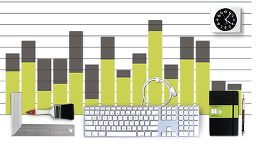

- Gestão de Escopo (definição e controle do que estará incluso na execução da obra / reforma / decoração, suprimindo ou não o escopo de projeto para adequação de custos);
- Gestão de Prazos (definição e controle das datas marco e dos processos necessários para realização das atividades dentro das previsões, com elaboração de cronograma de obra / reforma / decoração e de todas as suas atividades conforme estabelecidas em projetos);
- Gestão de Custos (definição das estimativas orçamentárias, controle de custos mensais, centralização de cobranças, adequação aos fluxos de caixa);
- Gestão de Qualidade (critérios de acompanhamento e procedimentos adotados na aplicação de materiais e execução de serviços, inspeções em obra e pós-obra);
- Gestão de Suprimentos (plano de compras, cotações, análise de negociações, contratação de fornecedores, recolhimento e efetuação de pagamentos);
- Gestão de Pessoas (acompanhamento do desempenho das equipes em função da qualificação das pessoas, fornecimento de feedback, resolução de problemas e coordenação de mudanças para melhorar o desempenho das atividades, acompanhamento e controle das condições do ambiente de trabalho e da segurança no canteiro de obras / reformas);
- Gestão de Relacionamentos (planejamento e acompanhamento do processo de comunicação entre as partes interessadas, com elaboração do plano de comunicação da obra / reforma / decoração para garantir a agilidade das ações e decisões internas e a correta formalização dos registros, definição dos critérios de distribuição, revisão, disponibilidade de acesso, armazenamento, recuperação e disposição final de documentos e registros em meio físico ou eletrônico, relato mensal do desempenho da obra / reforma / decoração e de todas as áreas do gerenciamento);
- Segurança (seguro básico para obras civis, que dá total cobertura durante e após a execução da obra).
Resultados
- Garantia do cumprimento pleno dos contratos pelos contratados, com acompanhamento das eventuais alterações de escopo e aditivos contratuais.
- Finalização e entrega da obra / reforma / decoração dentro dos parâmetros de prazo, custo e qualidade, definidos inicialmente junto ao cliente.
- Segurança no processo de compras, com o cumprimento de especificações de projeto e a realização de compras adequadas de fornecedores confiáveis em momentos oportunos.
- Garantia da utilização e alocação de recursos humanos adequados para cada fase da obra / reforma / decoração.
- Garantia da comunicação eficaz entre todos os envolvidos na obra / reforma / decoração, de modo que as informações corretas sejam disponibilizadas nos momentos apropriados para cada parte interessada.
- Redução dos riscos e seu gerenciamento ao longo de toda a obra / reforma / decoração.
Duração
Orçamento - Projeto de Arquitetura
Notas
- Não acompanhamos serviços de mão de obra indicada.
- Aceitamos indicação de fornecedores desde que seja comprovada sua idoneidade e notória
capacidade técnica de fornecimento e execução de materiais.
- Não administramos obras cujo projeto não foi desenvolvido por nossa equipe de profissionais.
|
 |